Costa Blanca · Guardamar
Property for sale in Guardamar del Segura
New apartments and penthouses close to the long sandy beaches, the pine forest and the marina. Here are the properties we sell in Guardamar del Segura today, with a short guide to the areas and what buying really costs.
- 11properties for sale in Guardamar
- from €222,000for a new apartment
- about 30 minto Alicante-Elche airport
- about 11 kmof sandy beaches
For sale now
Properties for sale in Guardamar del Segura
New apartments and penthouses with 2 or 3 bedrooms, many close to the beach or the port, and a semi-detached house in El Raso. Prices are as listed today; ask us for the current availability.
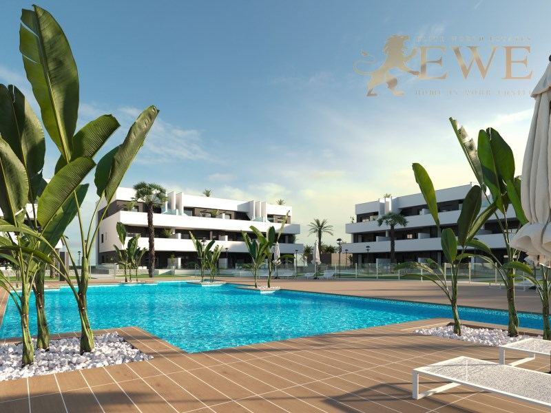
EWE3318Guardamar del Segura
Fully equipped, exclusive tourist flats in Guardamar del Segura
€222,000
2 bedrooms · 2 bathrooms · 64.1 m²Ref. EWE3318
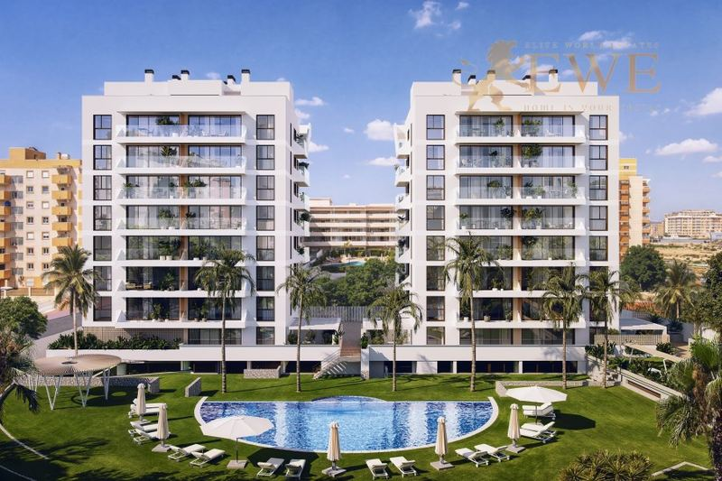
EWE3698Guardamar del Segura
New apartment close to the beach in Guardamar del Segura
€253,000
2 bedrooms · 2 bathrooms · 65 m²Ref. EWE3698
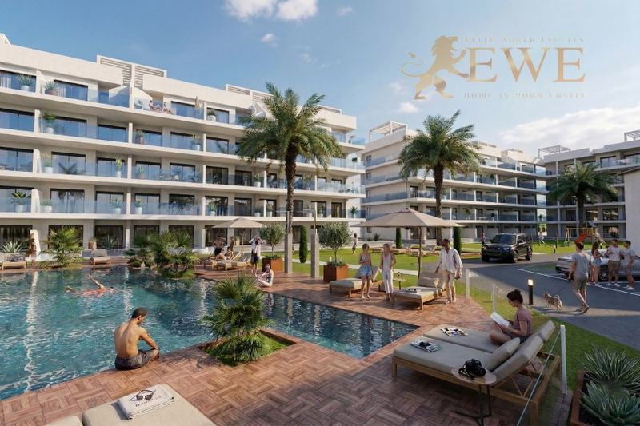
EWE3788Guardamar del Segura
Fully Furnished Apartments Next to La Mata Natural Park in Guardamar del Segura
€295,000
2 bedrooms · 2 bathrooms · 70 m²Ref. EWE3788
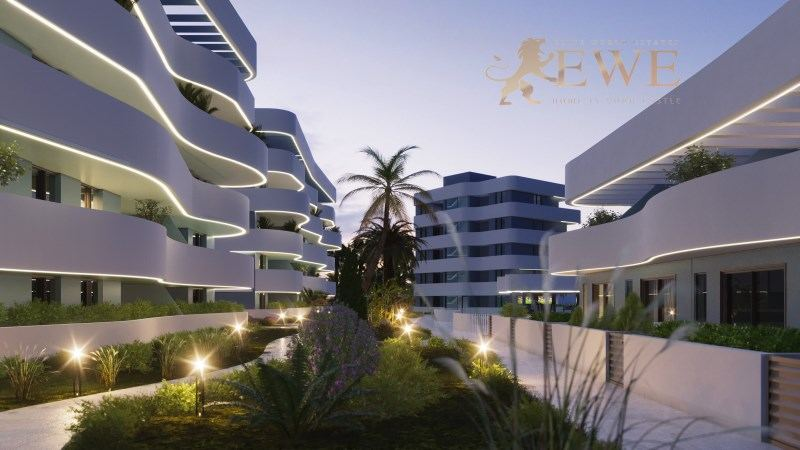
EWE3230Guardamar del Segura
Elegant apartment in picturesque El Raso
€299,000
2 bedrooms · 2 bathrooms · 80 m²Ref. EWE3230
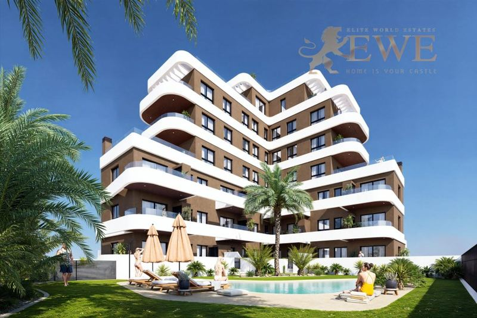
EWE3733Guardamar del Segura
New apartments just 1 km from the beach in Guardamar del Segura
€305,000
2 bedrooms · 2 bathrooms · 55 m²Ref. EWE3733
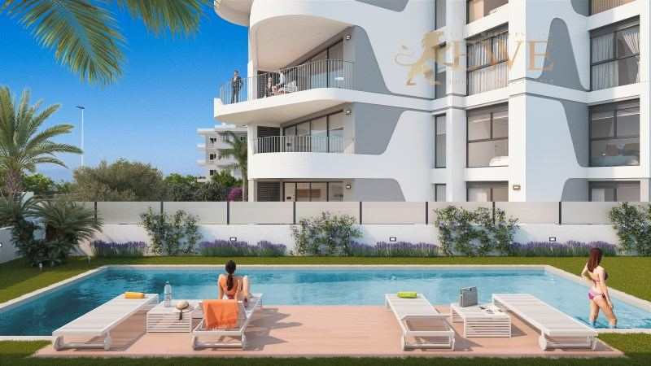
EWE3496Guardamar del Segura
New apartments near the port in Guardamar del Segura
€315,000
3 bedrooms · 2 bathrooms · 92 m²Ref. EWE3496
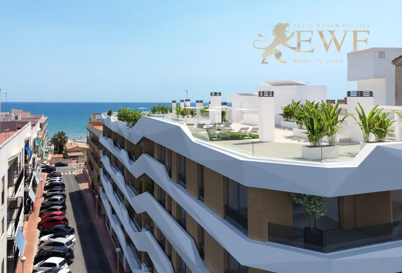
EWE3305Guardamar del Segura
Ideally located flat 100 m from the beach in Guardamar del Segura
€341,000
2 bedrooms · 2 bathrooms · 87 m²Ref. EWE3305
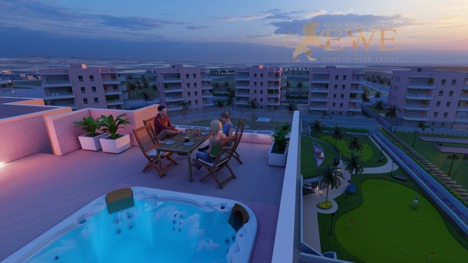
EWE3106Guardamar del Segura
Ready penthouse in Guardamar del Segura
€344,900
3 bedrooms · 2 bathrooms · 75 m²Ref. EWE3106
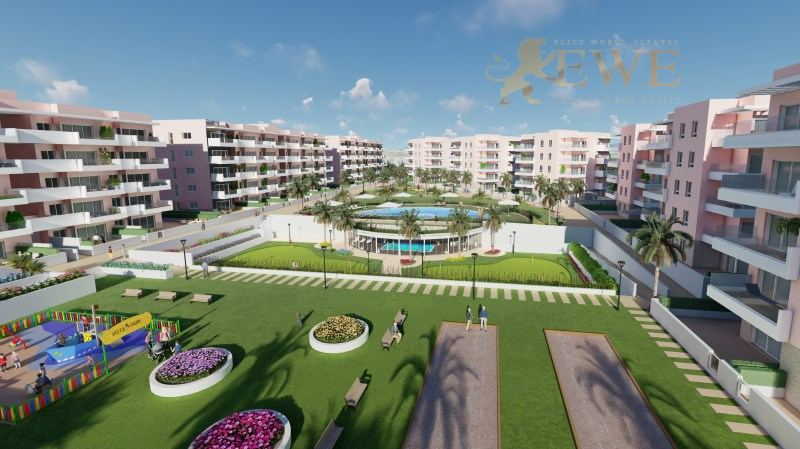
EWE3105Guardamar del Segura
Ready, new apartment with 145 m2 terrace in Guardamar del Segura
€344,900
3 bedrooms · 2 bathrooms · 75 m²Ref. EWE3105
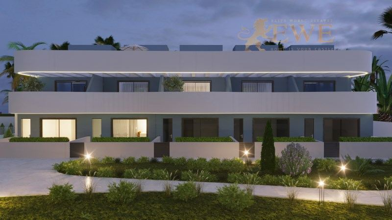
EWE3636Guardamar del Segura
Elegant semi-detached house with a large terrace in El Raso
€459,000
3 bedrooms · 3 bathrooms · 111 m²Ref. EWE3636
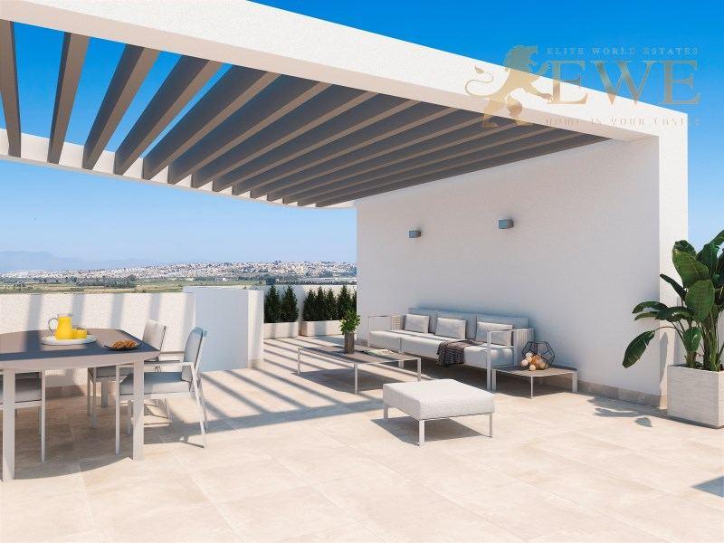
EWE3497Guardamar del Segura
Spacious penthouse close to the port and beach in Guardamar del Segura
€550,000
3 bedrooms · 2 bathrooms · 92 m²Ref. EWE3497
The city
Living in Guardamar del Segura
Guardamar del Segura is a seaside town of about 17,000 people in the south of the Costa Blanca, where the Segura river meets the sea, between Santa Pola and Torrevieja. It is known for its long sandy beaches, around 11 km of them, backed by dunes and a large pine forest that was planted to hold the sand.
The town has a relaxed, Spanish feel, with a centre of shops and cafés, a marina by the river mouth, and parks in the pine forest for walking and cycling. South of the town, La Mata natural park and its lagoon are close by.
Prices are reasonable and the town stays alive all year. Alicante-Elche airport is about 30 minutes away by car, and Torrevieja about 15 minutes.
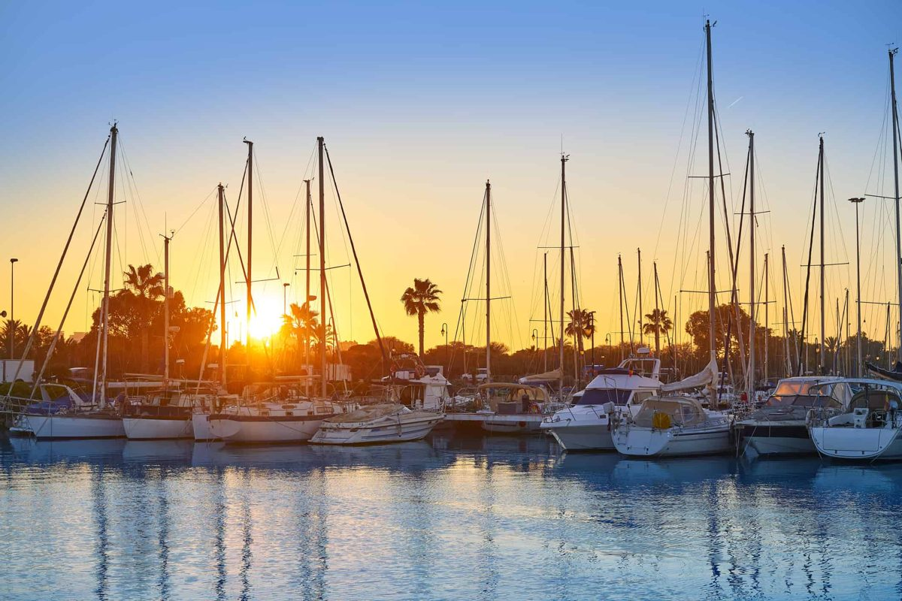
Where to buy
The main areas of Guardamar del Segura
Centre
Shops, cafés and services on foot, a few minutes from the beach. Apartments for living all year.
Seafront and pine forest
The beaches, the dunes and the pine forest parks. Apartments close to the sand.
Near the port
The marina at the mouth of the Segura river, with restaurants. New apartments and penthouses.
El Raso
A quieter residential area south of the town, near La Mata natural park. Apartments and houses.
Budget
What it costs to buy in Guardamar del Segura
On top of the price you pay tax and fees. For a new home at €315,000, for example, that is €31,500 VAT and €4,410 stamp duty, plus notary, land registry and legal fees. Taxes on resale homes are different, so always ask us for the exact figure for the home you like.
| New build | 10% VAT (IVA) + 1.4% stamp duty (AJD) |
|---|---|
| Resale home | 9% transfer tax (ITP), 11% above €1 million |
| Notary, registry, lawyer | about 1.5–2.5% of the price |
| Every year | IBI property tax and community fees, which depend on the home |
Questions
Buying property in Guardamar del Segura: questions and answers
How much does an apartment cost in Guardamar del Segura?
Our apartments in Guardamar start at €222,000 today, and most with 2 or 3 bedrooms cost between €250,000 and €345,000. Penthouses near the port cost up to about €550,000.
Are the beaches in Guardamar sandy?
Yes. Guardamar has around 11 km of fine sandy beaches with dunes and a pine forest behind them, among the most natural beaches on the Costa Blanca.
How far is Guardamar from the airport?
Alicante-Elche airport is about 30 minutes by car, and Región de Murcia airport about 50 minutes.
What costs are there on top of the price?
In the Valencian Community you pay 10% VAT and 1.4% stamp duty on a new build, and 9% transfer tax (11% above €1 million) on a resale home. Notary, land registry and legal fees add about 1.5–2.5%.
Can foreigners buy property in Guardamar del Segura?
Yes. Anyone can buy property in Spain. You need a Spanish NIE tax number and usually a Spanish bank account, and we help you with both. See our guide to the NIE number.


Looking for a home in Guardamar del Segura?
Tell us your budget and what you need. We reply within one working day, in English, German, Spanish or Polish.